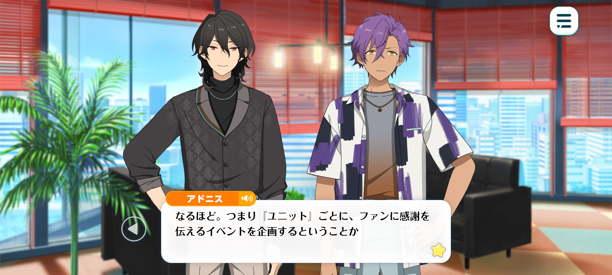
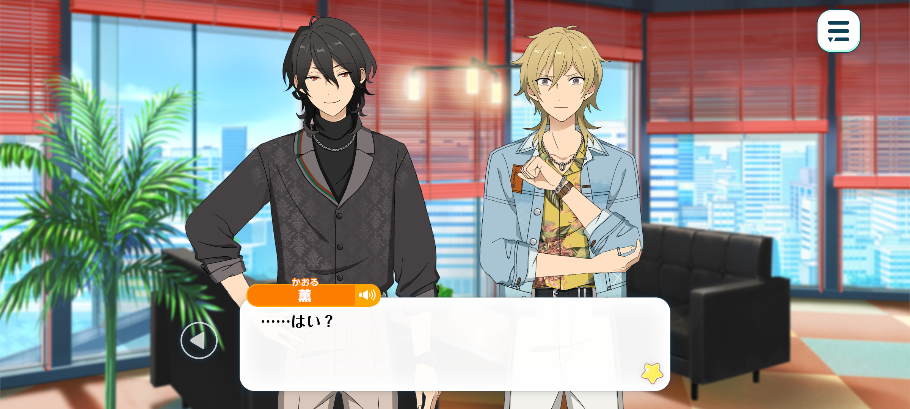
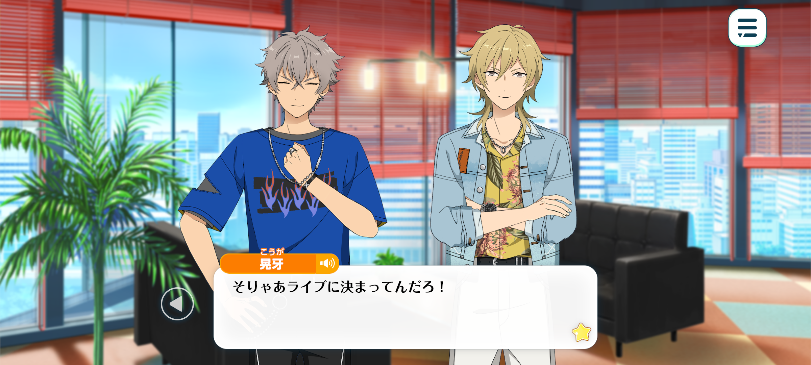
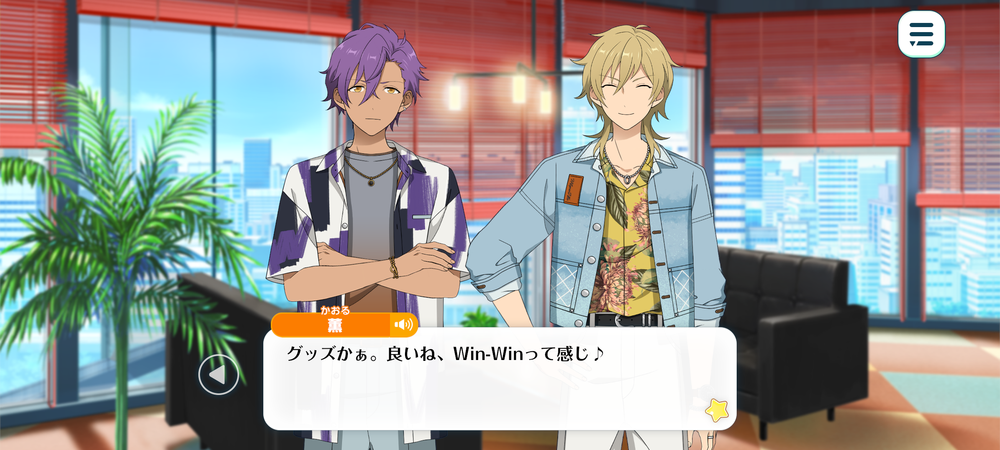
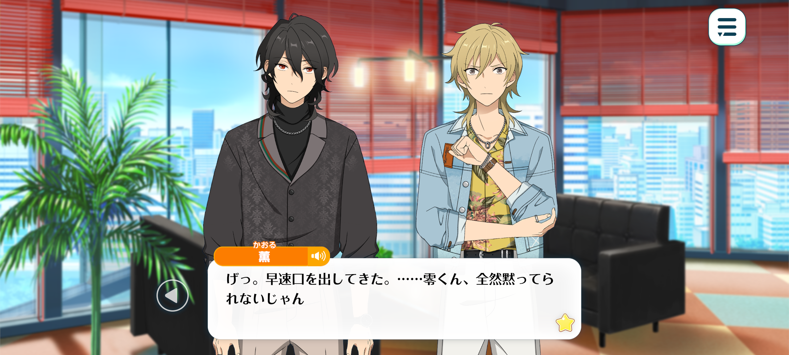

Velvet Ship
Haul To The Wind / Chapter 4


Time: A few minutes later

Rei: ...And that, my friends, is the gist of things.
Adonis: I see. So we need to organise an event to show our gratitude to our fans.
Koga: Hmph... So, how far can we take this thing?
Rei: Within the realm of common sense, I suppose. Though I'm afraid I couldn't say for certain.
Koga: Whaddya mean you don't know?! And the hell is “realm of common sense” suppose t’mean?
Rock music's all about kickin’ down those boring-ass rules of “common sense”!
Rei: What a fearsome glare. I'm not part of the management team, am I? How on earth should I know?
As for the budget, our coffers aren't bottomless, of course. Still, I imagine we can afford to be reasonably lavish, provided the expenditure serves a purpose.
The other units have put on some rather extravagant events, so I doubt funding will prove to be much of an obstacle.
Kaoru: Yup. I had a look earlier at what others units got up to, and, let's just say they weren't exactly shy about splashing the cash.
Still, just because we have the money doesn't mean we can spend it willy-nilly, does it? We ought to come up with something original. It would be pretty lame if we did the same as another unit.
Something that's unmistakably UNDEAD that the fans'll enjoy too... hmm...
Rei: Well, I'll leave the delicate task of untangling this little web of possibilities to you, Kaoru-kun.

Kaoru: ...Me?
What do you mean?! This is the first I'm hearing of this!
Rei: This event is an opportunity to express our heartfelt gratitude to our fans who've supported us throughout our journey.
Yet, an occasion of this magnitude will inevitably draw a great deal of attention our way. Our reach will extend beyond our usual circle, bringing us into the sight of those who don't usually keep up with UNDEAD.
If we wish to broaden the horizon of our activities, both in breadth and in depth, surely now is the time to take initiative, wouldn't you agree?
In the cutthroat world of show biz, one cannot afford to rest upon one's laurels. I'm sure a man such as yourself would understand, Kaoru-kun.
We must unveil a thrilling new facet of ourselves whilst remaining true to the very essence of who we are.
And that, my dear Kaoru-kun, is precisely why I've chosen a sprightly young upstart such as yourself to take the reins! A fresh breeze to sweep through the dusty corridors of the industry, if you will.
As for me, I'll be content to watch from the sidelines, a humble spectator sipping on my tea.
Kaoru: I'll give you this, you're pretty good at coming up with convincing reasons on the fly.
You're real crafty, Rei-kun.
But that's a bad habit of yours, y’know? You keep saying you're too old for this sort of thing and that you'll stay out of it, but you somehow always end up sticking your nose in anyway.
It won't be long before you're throwing in your two cents either. Just you wait.
Rei: Kukuku. My, my, you know me well, Kaoru-kun~♪
Kaoru: Sure, leaving things to other people sounds good in theory, but don't overdo it, ‘kay?
Welp, it's bothersome but someone's gotta do it...
Guess I'll take charge... Let's just get straight into brainstorming ideas.
What's something that will make all our fans happy?

Koga: A live, obviously!
Just like monsters of the night, runnin’ wild through the darkness- we'll howl and rile up the crowd all night long, gettin’ them so damn excited they won't know what hit ‘em!
Kaoru: Yeah, I had a feeling you'd say that.
All you wanna do is play music. Isn't that right, Koga-kun ♪
Koga: Well, duh! We wanna get out there ‘n play and our fans wanna see us tear up the stage! What's so complicated ‘bout that!?
Kaoru: Ahaha, I totally get it. I'm sure it would make them happy, too.
I do still get the occasional fan letter that says they discovered us through our music, so it would make sense for us.
And I'm sure if we did a poll, they would vote for us to do a live. Buutttt…
Adonis: That's no different to what we usually do.
Kaoru: Yup. If we just did a live and called it a day, it would feel a little… lacking, y’know?
If we're not limited by our budget, shouldn't we take this chance to do something a little different ?
Adonis: Hmm...
...That reminds me. When I was doing a radio show, I asked our listeners what they'd like us to do for our third anniversary.
I recall that some of them said they'd like some anniversary merchandise.

Kaoru: Ooo, merch! Now that's a cute idea! Everybody wins ♪
Fans get something tangible to remember us by, and the only real work on our end is the design.
Once that's taken care of, we can leave the rest of it to the manufacturer and focus on the live itself.
Adonis: You're very well informed, Hakaze-senpai.
Kaoru: Well, I used to manage a live house so, I know a thing or two ♪

Rei: Hmm... Yet such a thing is commonplace amongst the other units.
Even if we were to offer an exclusive, limited edition design, to rely on that alone for a fan appreciation event would be rather underwhelming, no?
Kaoru: See! That's exactly what I was talking about earlier! You really can't keep that mouth of yours shut for very long, can you?
Rei: Kukuku. Pay me no mind. These are naught but the idle mutterings of a doddering old man.
I was merely giving voice to reason...♪